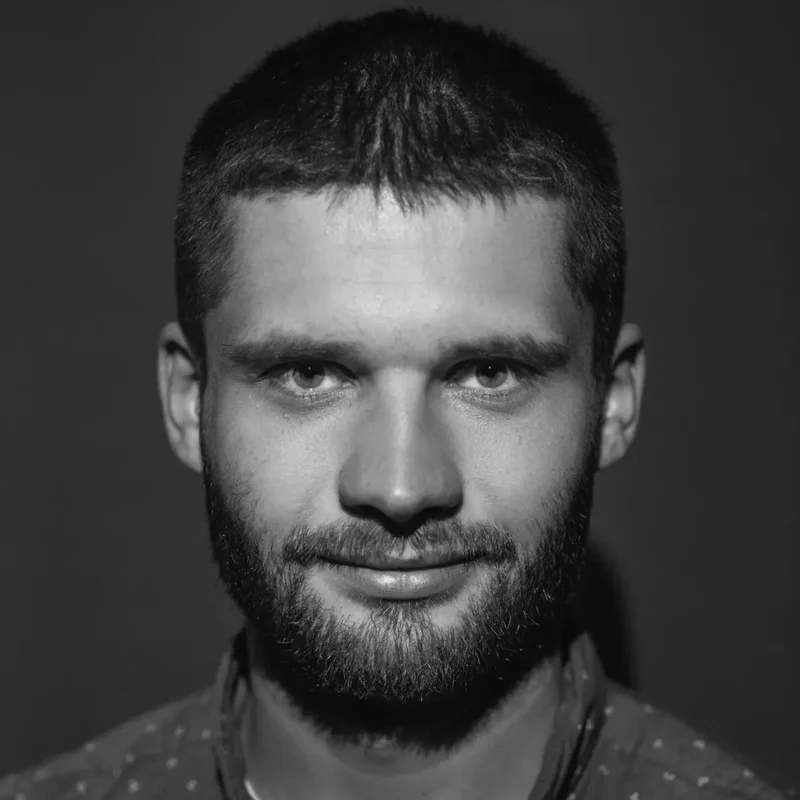
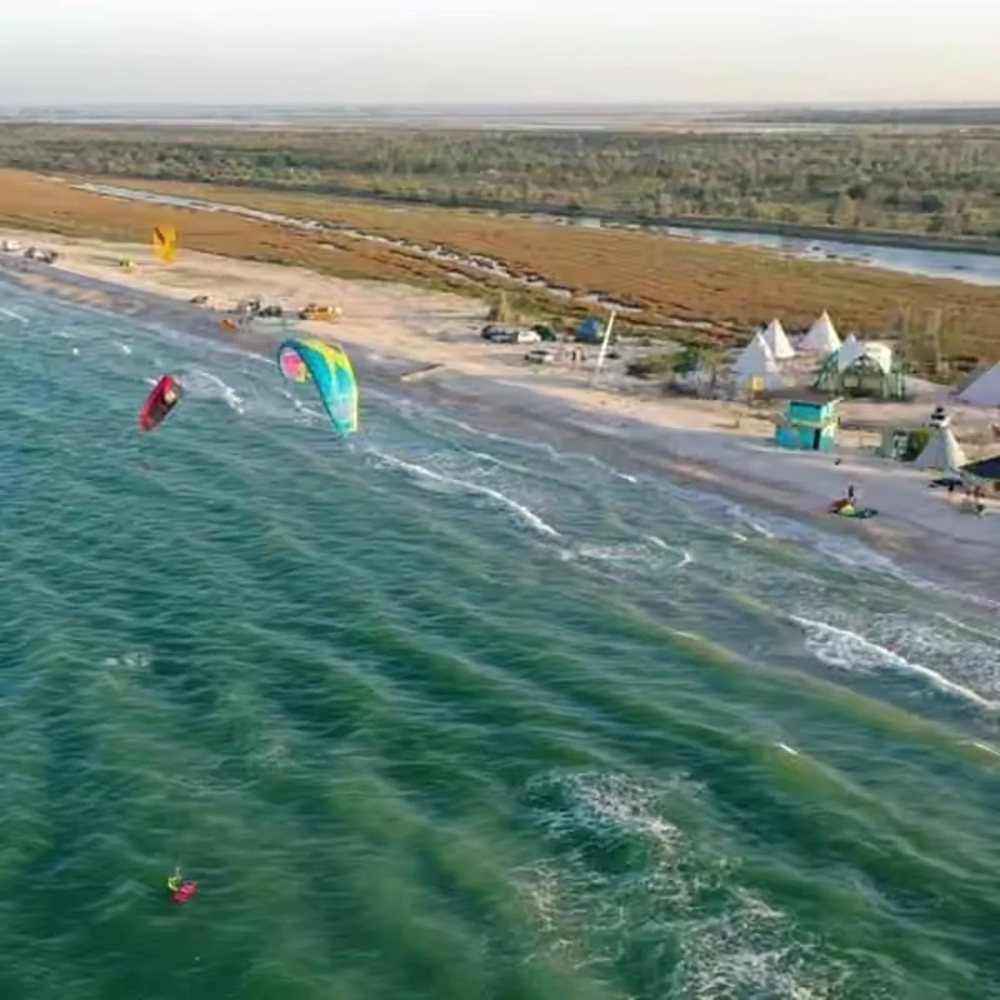
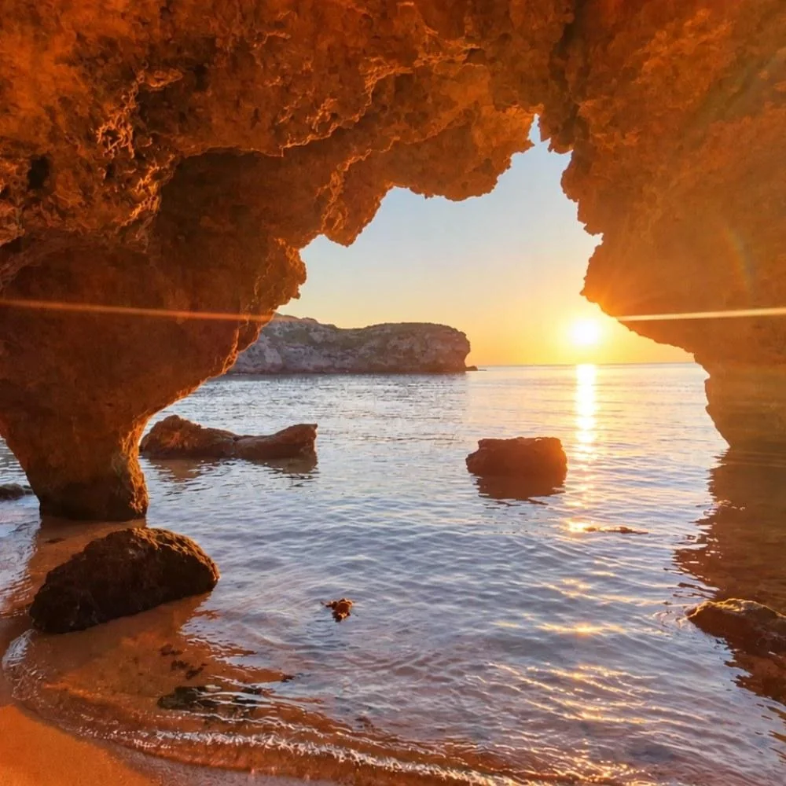
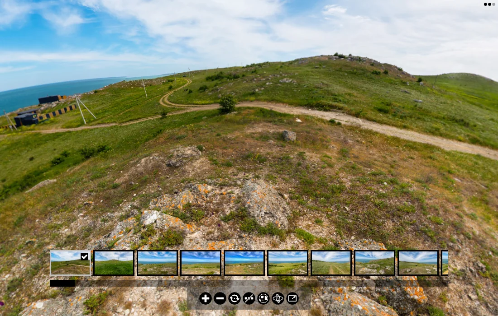

Восточный Крым · Ленинский район
Свой участок у Азовского моря в Щёлкино
4–6 соток в собственность в 50–100 метрах от моря, с закатами в море. Я живу здесь: покажу участок по видео, проверю документы и проведу сделку, пока вы дома.
Почему восток Крыма
Почему земля у моря здесь ещё доступна
Восток Крыма пока знают меньше, чем Ялту и Алушту. Поэтому земля у воды здесь ещё доступна, а выбор мест рядом с морем шире. Самые удобные участки обычно уходят первыми.
Закаты в море
Берег здесь смотрит на запад, поэтому солнце садится прямо в море. До воды от 50 до 100 метров.
Только собственность
Продаём участки в собственность. Без долей и аренды.
Свет и вода
Поможем с подключением коммуникаций на выбранном участке.
Цены на участки у моря
Участки в Щёлкино: 50–100 метров от моря
Все участки 4–6 соток в собственность, от 50 до 100 метров до моря. Чем ближе к воде, тем дороже. Свободных участков на каждой линии немного, поэтому актуальный список с видео пришлю в сообщении.
Рассрочка до 6 месяцев, первый взнос от 100 000 ₽. Сделка через Домклик. Посмотреть район на карте →

Кто вам ответит
Меня зовут Алексей. Я живу здесь и покажу всё как есть
Большинство наших покупателей живут в других городах. Поэтому я отвечаю на все вопросы до того, как вы сядете в самолёт или машину. Приедете уже к своему участку.
- подберу участок под ваш бюджет и задачу
- покажу его по видео: подъезд, соседей, вид
- расскажу честно про дороги, воду, свет и обстановку
- проверю документы и сопровожу сделку
Если вы далеко
Как купить участок в Крыму, не приезжая заранее
Подбор
Вы пишете бюджет и пожелания. Я присылаю подходящие варианты.
Видеопоказ
Еду на участок и показываю всё в видеозвонке или записи.
Документы
Проверяем выписку ЕГРН и ограничения до любых оплат.
Сделка
Расчёты через сервис безопасных сделок Домклик, регистрация в Росреестре.
Местность
Побережье Щёлкино и Бухта Космонавтов




Рядом строится «Азгард»
На берегу Бухты Космонавтов наша группа компаний развивает туристический комплекс. Для соседей это будущая инфраструктура рядом с домом. Территорию можно осмотреть в панорамном 3D-туре.
Открыть 3D-тур →Другие участки в Восточном Крыму
Дешевле, под прописку или больше земли
Посёлок «Скиф»
от 500 000 ₽
Клубный посёлок в 2 км от моря. Разные участки по расположению и коммуникациям.
Спросить в MAX →СНТ в Керчи
от 700 000 ₽
«Коммунальник», «Горняк», «Вишенка». Можно построить дом и прописаться.
Спросить в MAX →Крупные участки
от 4,5 млн ₽
30–50 соток в том же районе у Бухты Космонавтов. Для большого дома или своего проекта.
Спросить в MAX →Частые вопросы
Что обычно спрашивают
Почему здесь такие цены?
Восток Крыма пока менее известен, и спрос здесь ниже. Это не скидка за недостатки, а цена направления, которое ещё не раскрутили. Все участки в собственность, документы проверяем по ЕГРН.
Сколько метров до моря?
Первая линия — 50 метров до воды, третья — до 100 метров. Точное расстояние до каждого свободного участка покажу на карте и на видео.
Можно ли посмотреть участок, не приезжая?
Да. Я приеду на участок и покажу его по видео: подъезд, границы, соседей, вид на море. Приехать лично можно позже, перед сделкой.
Есть ли свет и вода?
Зависит от участка. По каждому варианту расскажу, что уже подведено и как подключить остальное. С подключением помогаем.
Можно ли построить дом?
Зависит от разрешённого использования конкретного участка. По каждому варианту скажу, что можно строить. Если строительство возможно, построим дом под ключ.
Есть ли рассрочка?
Да, до 6 месяцев, первый взнос от 100 000 ₽. Подробные условия по конкретному участку расскажу в разговоре.
Как защищены деньги?
Расчёты проходят через сервис безопасных сделок Домклик. Продавец получает деньги после регистрации перехода права в Росреестре.
Связаться
Напишите бюджет — пришлю свободные участки с видео
Достаточно одного сообщения: бюджет и для чего участок. Отвечаю сам, без колл-центра.
+7 978 296-41-08
Не пользуетесь MAX? Оставьте телефон в короткой форме, я перезвоню.